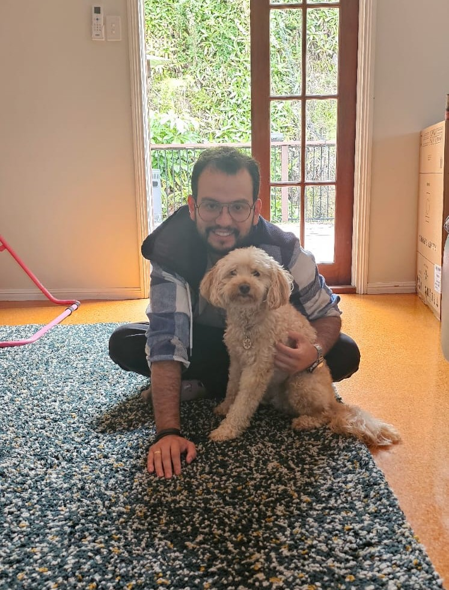
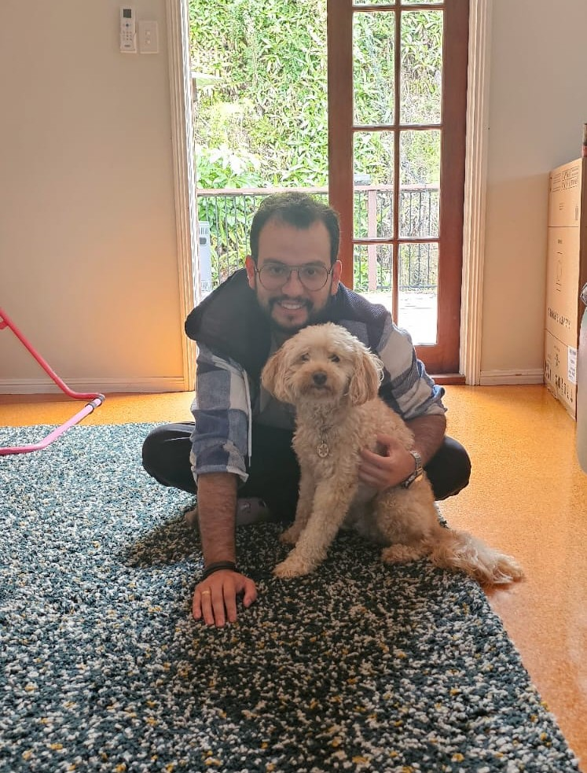

LO QUE DICEN NUESTROS CLIENTES
¡Mascotas felices, dueños satisfechos!
En A&A Pets Care, nuestra prioridad es que tu y tu mascota se sientan cuidados y felices. Mira lo que nuestros clientes tienen que decir.
Luna y Claudia G.
Deje a Luna al cuidado de Alejandra mientras salia de viaje, y no podria estar mas feliz con el servicio. !Mil gracias!
★ ★ ★ ★ ★
Max.
Nuestro cachorro Max ama sus paseos con Andres. Ha mejorado muchisimo gracias al cuidado personalizado. Estamos encantados.
★ ★ ★ ★ ★
Luis P..
Andres es increible. Mi gato Simba es muy timido, pero con el se sintio en confianza de inmediato. Ahora no me preocupo cuando tengo que salir por trabajo. Lo recomiendo 100%.
★ ★ ★ ★ ★
GALERIA
Conoce algunas de las mascotas felices que hemos cuidado
 
